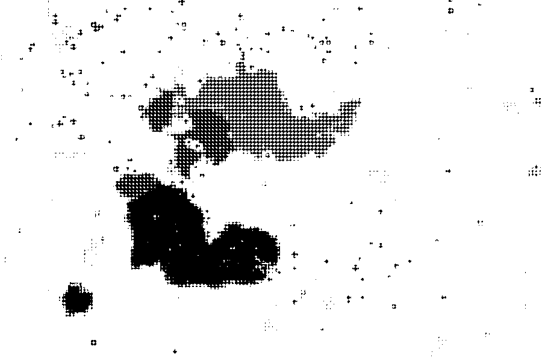

In A Thousand Plateaus (1980), Deleuze and Guattari call "minor" or "nomad" science the kind of knowledge that follows its material and poses problems, as opposed to the royal science of the State, which reproduces and extracts constants. These projects work with nomadology in that spirit, by building things that can be tested against the plateaus and against the research on which they drew.
"Following is not at all the same thing as reproducing."
Deleuze and Guattari, A Thousand Plateaus, 372

Physical simulations of the processes Deleuze and Guattari describe in plateaus 12 and 13, from capture to warding off and the war machine, played out in four materials (crystals, a liquid, sound, gravity).
Metallurgiccrystallization Hydraulicliquid Acousticresonance Cosmicgravity
Reference sheets on the "Treatise on Nomadology" and "Apparatus of Capture": every axiom and proposition by page, along with the five machinic processes, royal and nomad science, the State's forms and the works cited in Deleuze and Guattari's notes.
Entry by entry351-473 Two sciences361-74 Five machinic processes430-37 The State's three forms459 Concordanceconcepts After 1980the record The plateaus' library552-71
Plateaus 12 and 13 in the Minuit French and Massumi's English, lined up sentence by sentence beside an annotated translation, with glosses, Massumi's endnotes and a lexicon of terms.
Plateau 12, Treatise on Nomadology351-423 Plateau 13, Apparatus of Capture424-73